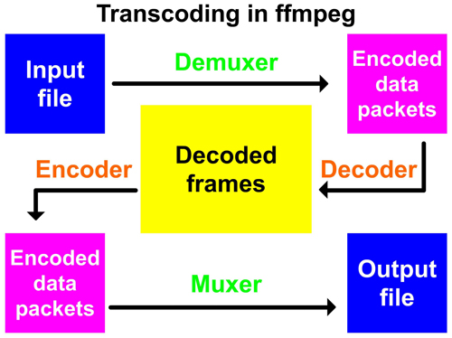
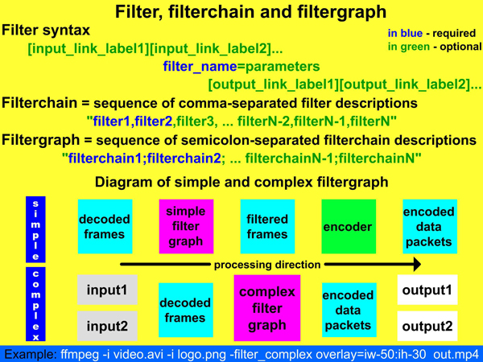
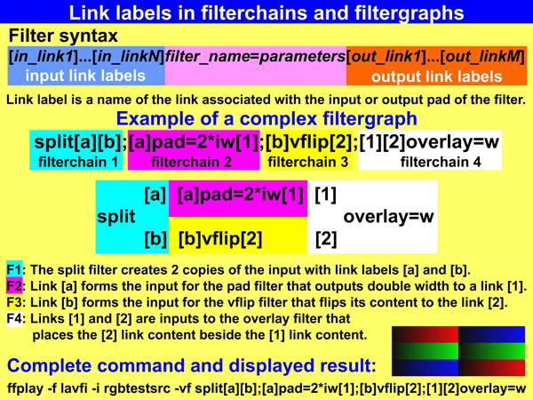
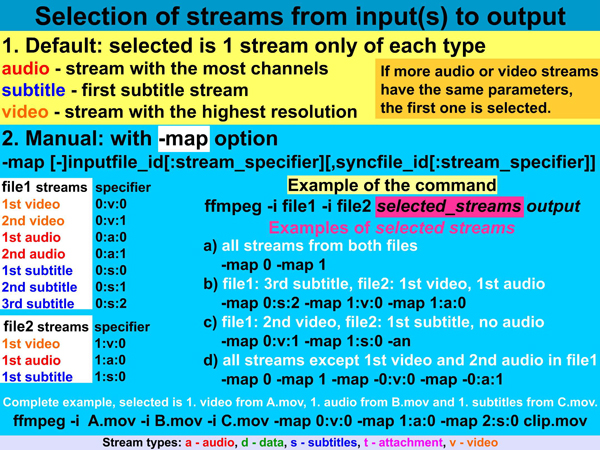
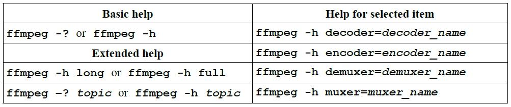

FFmpeg学习资料
windows下环境配置
- 首先下载开发工具。
- 然后将下载的东西解压到想要的路径，并将bin目录配置到path环境变量。
- 在命令行输入
ffmpeg -version，如果输出正常，表示安装成功。
FFmpeg基本原理
FFmpeg的编解码原理

命令举例：ffplay -f lavfi -i testsrc -vf transpose=1：将视频使用transpose指令顺时针旋转90度ffmpeg -i input.mp3 -af atempo=0.8 output.mp3：将输入的音频速度使用atempo指令放慢到80%
FFmpeg的命令模式（蓝色是必须的，绿色是可选的）

转换链和转换图形中的链接标签，每一块标签之间用分号分隔：

媒体流处理，如-map i:a表示选择所有的音频流，-map i:v表示选择所有的视频流，-map i:s标识选择所有的字幕流（s表示subtitle），以上每个命令中的i代表选中流的索引：

除了特殊的-map指令，流操作符有其他很多不同形式的指令：
如：ffmpeg -i input.mpg -b:a 128k -b:v 1500k output.mp4使用-b指令设置音视频的比特率。
Lavfi虚拟设备
lavfi就是libavfilter虚拟输入设备的简称（libavfilter virtual input device）。就是一个FFmpeg的一个模拟器，用来播放显示测试模型。
如：ffplay -f lavfi -i smptebars表示输出一个电视无信号界面，ffplay -f lavfi -i color=c=blue输出一个蓝色的界面。
帮助

如：ffmpeg -h decoder=flv显示FLV解码器的信息。
输出常用的可用命令
ffmpeg -version：版本ffmpeg -bsfs：显示内置的比特流滤镜ffmpeg -codecs：显示所有编码译码器ffmpeg -decoders：显示所有的解码器ffmpeg -encoders：显示所有的解码器ffmpeg -filters：显示所有可用的内置滤镜ffmpeg -formats：显示所有支持处理的音视频格式ffmpeg -layouts：显示所有可用的音频通道布局ffmpeg -L：显示ffmpeg的协议ffmpeg -pix_fmts：显示所有的可用像素格式ffmpeg -protocols：显示所有支持的协议ffmpeg -sample_fmts：显示所有的音频采样格式more命令，在命令末尾加上该词以查看更多的信息。如：ffmpeg -help | more、ffmpeg -h|more- 文件输出命令：
>符号和>>符号。前者表示覆盖，后者表示append写入。如：ffmpeg -help > data.txt和ffmpeg -filters >> data.txt